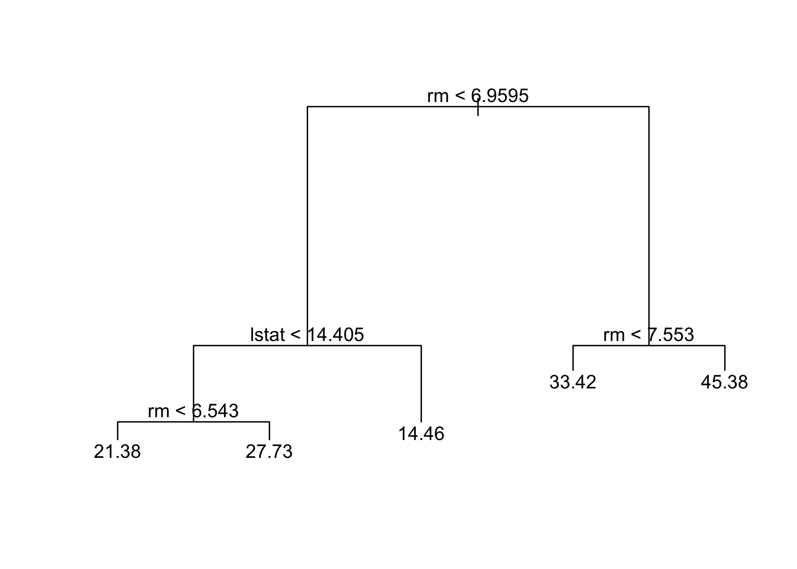
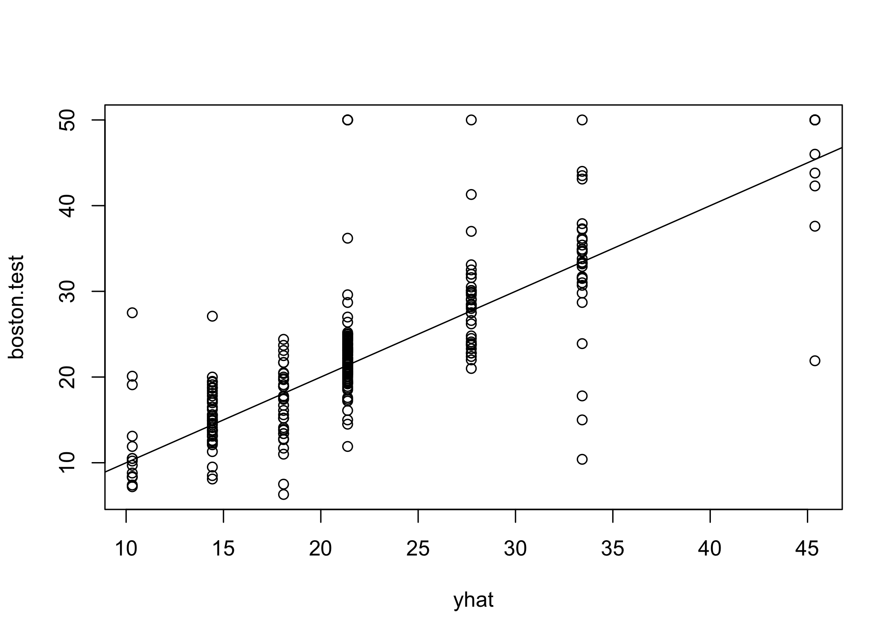
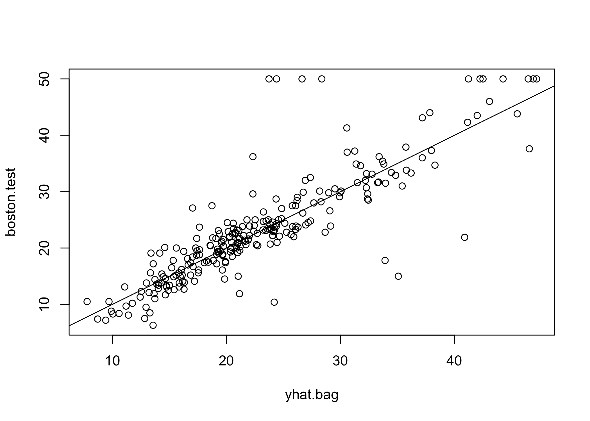
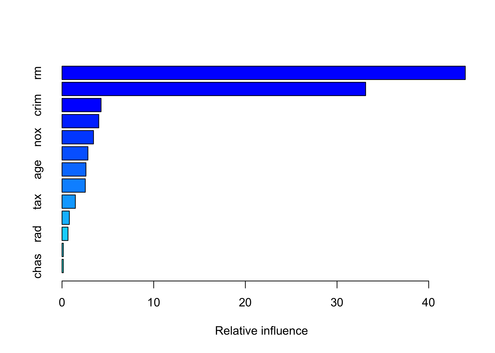

Lab 4
Decision Trees, Bagging, Random Forests, and Boosting
Decision Trees
Fitting Classification Trees
The tree library is used to construct regression trees.
Here we fit a regression tree to the Boston data set. First, we create a training set and fit the tree to the training data.
library(MASS)
set.seed(1)
train <- sample(1:nrow(Boston), nrow(Boston) / 2)
tree.boston <- tree(medv ~ ., Boston, subset = train)
summary(tree.boston)
Regression tree:
tree(formula = medv ~ ., data = Boston, subset = train)
Variables actually used in tree construction:
[1] "rm" "lstat" "crim" "age"
Number of terminal nodes: 7
Residual mean deviance: 10.38 = 2555 / 246
Distribution of residuals:
Min. 1st Qu. Median Mean 3rd Qu. Max.
-10.1800 -1.7770 -0.1775 0.0000 1.9230 16.5800 Notice that the output of summary() indicates that only four of the variables have been used in constructing the tree. In the context of a regression tree, the deviance is simply the sum of squared errors for the tree.
The variable lstat measures the percentage of individuals with lower socioeconomic status, while the variable rm corresponds to the average number of rooms. The tree indicates that larger values of rm, or lower values of lstat, correspond to more expensive houses. For example, the tree predicts a median house price of 45{,}400 for homes in census tracts in which rm >= 7.553.
It is worth noting that we could have fit a much bigger tree by passing control = tree.control(nobs = length(train), mindev = 0) into the tree() function.
Now we use the cv.tree() function to see whether pruning the tree will improve performance.
In this case, the most complex tree under consideration is selected by cross-validation. However, if we wish to prune the tree, we could do so as follows.

In keeping with the cross-validation results, we use the unpruned tree to make predictions on the test set.
yhat <- predict(tree.boston, newdata = Boston[-train, ])
boston.test <- Boston[-train, "medv"]
plot(yhat, boston.test)
abline(0, 1)
[1] 35.28688The test set MSE associated with the regression tree is 35.29. The square root of the MSE is therefore around 5.941, indicating that this model leads to test predictions that are, on average, within approximately 5{,}941 of the true median home value for the census tract.
Bagging and Random Forests
Here we apply bagging and random forests to the Boston data, using the randomForest package in R. Recall that bagging is simply a special case of a random forest with m = p.
randomForest 4.7-1.1Type rfNews() to see new features/changes/bug fixes.set.seed(1)
bag.boston <- randomForest(medv ~ ., data = Boston,
subset = train, mtry = 12, importance = TRUE)
bag.boston
Call:
randomForest(formula = medv ~ ., data = Boston, mtry = 12, importance = TRUE, subset = train)
Type of random forest: regression
Number of trees: 500
No. of variables tried at each split: 12
Mean of squared residuals: 11.10176
% Var explained: 85.56The argument mtry = 12 indicates that all 12 predictors should be considered for each split of the tree, so bagging is being performed. How well does this bagged model perform on the test set?
yhat.bag <- predict(bag.boston, newdata = Boston[-train, ])
plot(yhat.bag, boston.test)
abline(0, 1)
[1] 23.38773The test set MSE associated with the bagged regression tree is 23.42, about two-thirds of that obtained using an optimally pruned single tree. We could change the number of trees grown by randomForest() using the ntree argument.
bag.boston <- randomForest(medv ~ ., data = Boston,
subset = train, mtry = 12, ntree = 25)
yhat.bag <- predict(bag.boston, newdata = Boston[-train, ])
mean((yhat.bag - boston.test)^2)[1] 25.19144Growing a random forest proceeds in exactly the same way, except that we use a smaller value of the mtry argument. By default, randomForest() uses p/3 variables when building a random forest of regression trees, and \sqrt{p} variables when building a random forest of classification trees. Here we use mtry = 6.
set.seed(1)
rf.boston <- randomForest(medv ~ ., data = Boston,
subset = train, mtry = 6, importance = TRUE)
yhat.rf <- predict(rf.boston, newdata = Boston[-train, ])
mean((yhat.rf - boston.test)^2)[1] 19.62021The test set MSE is 20.07; this indicates that random forests yielded an improvement over bagging in this case.
Using the importance() function, we can view the importance of each variable.
%IncMSE IncNodePurity
crim 16.697017 1076.08786
zn 3.625784 88.35342
indus 4.968621 609.53356
chas 1.061432 52.21793
nox 13.518179 709.87339
rm 32.343305 7857.65451
age 13.272498 612.21424
dis 9.032477 714.94674
rad 2.878434 95.80598
tax 9.118801 364.92479
ptratio 8.467062 823.93341
black 7.579482 275.62272
lstat 27.129817 6027.63740Two measures of variable importance are reported. The first is based on the mean decrease of accuracy in predictions on the out-of-bag samples when a given variable is permuted. The second is a measure of the total decrease in node impurity that results from splits over that variable, averaged over all trees.
The results indicate that across all of the trees considered in the random forest, the wealth of the community (lstat) and the house size (rm) are by far the two most important variables.
Boosting
Here we use the gbm package, and within it the gbm() function, to fit boosted regression trees to the Boston data set. We run gbm() with the option distribution = "gaussian" since this is a regression problem.
Loaded gbm 2.2.2This version of gbm is no longer under development. Consider transitioning to gbm3, https://github.com/gbm-developers/gbm3The summary() function produces a relative influence plot and also outputs the relative influence statistics.

var rel.inf
rm rm 43.9919329
lstat lstat 33.1216941
crim crim 4.2604167
dis dis 4.0111090
nox nox 3.4353017
black black 2.8267554
age age 2.6113938
ptratio ptratio 2.5403035
tax tax 1.4565654
indus indus 0.8008740
rad rad 0.6546400
zn zn 0.1446149
chas chas 0.1443986We see that lstat and rm are by far the most important variables. We can also produce partial dependence plots for these two variables.
These plots illustrate the marginal effect of the selected variables on the response after integrating out the other variables. In this case, as we might expect, median house prices are increasing with rm and decreasing with lstat.
We now use the boosted model to predict medv on the test set.
yhat.boost <- predict(boost.boston,
newdata = Boston[-train, ], n.trees = 5000)
mean((yhat.boost - boston.test)^2)[1] 18.84709The test MSE obtained is 18.39: this is superior to the test MSE of random forests and bagging. We can also perform boosting with a different value of the shrinkage parameter \lambda in (8.10). Here we take \lambda = 0.2.
boost.boston <- gbm(medv ~ ., data = Boston[train, ],
distribution = "gaussian", n.trees = 5000,
interaction.depth = 4, shrinkage = 0.2, verbose = FALSE)
yhat.boost <- predict(boost.boston,
newdata = Boston[-train, ], n.trees = 5000)
mean((yhat.boost - boston.test)^2)[1] 18.33455In this case, using \lambda = 0.2 leads to a lower test MSE than \lambda = 0.001.